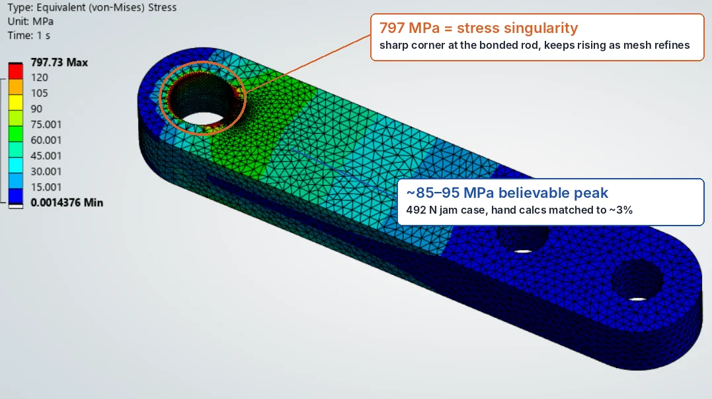
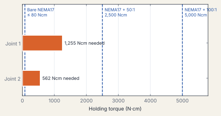
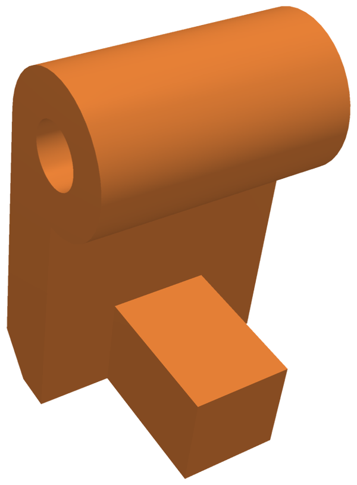
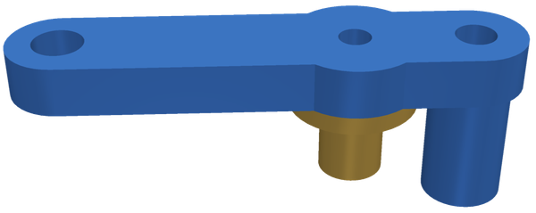
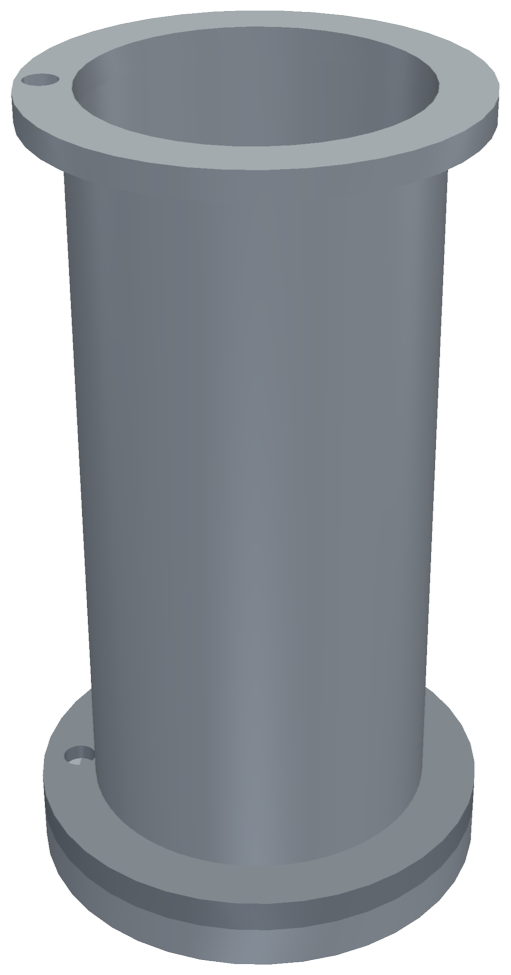

A robot tool that plants and pulls seismic sensors
TerraSense is a KAUST-affiliated robotics start-up entering a Saudi Aramco robotics challenge. Seismic surveys bury thousands of geophone nodes by hand. My job was the end-of-arm tool that buries a 183 g node in sand and pulls it back out, on an arm that can only lift 1.5 kg.
Problem
The arm's 1.5 kg payload sets the weight budget for everything. The tool also has to grip a node it can't see once the node is buried, and survive the node jamming in compacted sand.
Decisions
- A passive 3-jaw gripper. The jaws close on the node's halo by geometry alone, so there's no gripper motor to carry. Grip comes out at 6× what's needed.
- Air jets instead of digging. A nozzle ring fluidises the sand around the node, so insertion and retrieval need far less force.
- An off-axis lead screw with a guide rod and floating nut. The motor sits beside the plunger, not above it, and the floating nut stops misalignment from binding the screw. Drive force is 2× what's needed.
- DFMA on the collar. I split the collar into halves so it can be machined, and held the gripper to a 1.05 mm capture tolerance through a stack-up.
Checking it: FEA at a 600 N jam
I ran 5 Ansys simulations across 3 studies for the worst case: the node jams and the motor keeps pushing. Every part stays at 1.8× or more on yield, and the FEA cut my worst-case guide-rod hand estimate by 62%.

The arm torque study and the drawings
Torque study of the in-house 6-DOF arm
TerraSense also has its own 6-DOF arm, so I checked whether it could carry the tool. Three of its joints run ungeared NEMA17 steppers, which give 20–80 N·cm. The two loaded joints need 562 and 1,255 N·cm. That's 5–19× short, so the arm can't hold its own rated payload. A 100:1 gearbox gets back to about a 4× margin.
Along the way I found a material error in the CAD that made the links about 2.9× too heavy.

GD&T drawings
I'm producing detail drawings to ASME Y14.5. The jaw (TS-GD-001) is done, with datums picked by function, profile and position tolerances, and fastener clearances from the fixed-fastener formula. The nut arm (TS-GD-002) is in progress.



NextFinish the nut arm and collar drawings, redesign the collar with a taller spigot, and test the jets in real sand. The ~15 s cycle time is still an estimate until then.